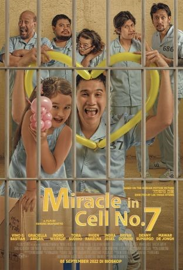
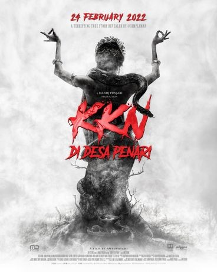

Nama Aplikasi web
Selamat datang di website kami, kita adalah pakar dari film yang kamu cari!

Miracle In Cell No 7
Dodo Rozak (Vino G. Bastian) hanya ingin menjadi ayah yang baik bagi anaknya, Kartika (Graciella Abigail/Mawar De Jongh), sekalipun kecerdasannya terbatas, bertingkah dan berperilaku seperti anak-anak. Pada kenyataannya, Kartika yang lebih sering menjaga dan merawat ayahnya. Keduanya hidup bahagia. Kartika bangga pada ayahnya yang berjualan balon sehari-harinya. Tapi, kebahagiaan mereka tidak berlangsung lama. Dodo ditangkap atas tuduhan memperkosa dan membunuh seorang gadis kecil. Dodo dimasukkan ke penjara, ke sel No.7 yang dihuni napi-napi beringas. Setelah berbagai peristiwa, Dodo berhasil mendapatkan bantuan untuk menyelundupkan Kartika ke dalam selnya. Kedekatan Dodo dan Kartika menularkan kebahagiaan bagi napi dan sipir di penjara. Mereka mulai ragu apakah pria penyayang seperti Dodo, tega membunuh seorang gadis kecil.
Hit & Run
Tegar Saputra (Joe Taslim), seorang polisi selebriti yang kemana-mana selalu diikuti kamera karena memiliki acara reality show-nya sendiri. Tegar ditugaskan untuk menangkap Coki (Yayan Ruhian), seorang gembong narkoba yang baru kabur dari penjara. Sayangnya, kali ini Tegar yang individualis harus dipasangkan dengan Lio (Chandra Liow), seorang tukang tipu. Tegar yang terbiasa beraksi sendirian kini harus berusaha menyelesaikan misinya bersama Lio yang justru membuat susah. Aksi Tegar dan Lio mencari Coki ditemani Meisa (Tatjana Saphira), penyanyi, dan Jefri (Jefri Nichol).
Gendut Siapa Takut?!
Moza Aphrodite (Marshanda), 28 tahun, penulis novel romance best seller, kerap dituntut Ibunya segera menikah. Meskipun berbadan gendut, Moza sangat pede dengan dirinya. Suatu hari di acara book signing, Moza terkejut dengan kehadiran Nareswara Radeva (Wafda Saifan Lubis), teman masa kecil yang paling ia benci karena sering merisaknya. Nares muncul untuk minta maaf dan memperbaiki hubungannya dengan Moza. Sayangnya tak mudah bagi Moza untuk memaafkan Nares. Moza justru menyinggung perasaan Nares. Hal itu justru membuatnya merasa bersalah. Gantian dia yang mengejar Nares untuk minta maaf. Moza mendatangi kampus tempat Nares mengajar dan mempermalukan dirinya sendiri karena terjatuh di lantai. Nares membantunya. Kejadian ini membuat hubungan Nares dan Moza sedikit mencair. Eno (Dea Panendra), sahabat baik Moza, bercerita tentang pertemuannya dengan seorang pria yang pernah ia taksir di masa lalu yang ternyata adalah Nares. Di sisi lain, Moza merasa memiliki kesempatan dengan Dafian Jatmiko (Marthino Lio), sutradara terkenal yang hendak memfilemkan salah satu novelnya. Moza sudah lama naksir Dafi dan merasa Dafi adalah pria impiannya.

KKN Desa Penari
KKN Desa Penari
Enam mahasiswa yang melaksanakan KKN di sebuah desa terpencil, Nur (Tissa Biani), Widya ( Adinda Thomas), Ayu (Aghniny Haque), Bima (Achmad Megantara), Anton (Calvin Jeremy) dan Wahyu (M Fajar Nugraha) tidak pernah menyangka kalau desa yang mereka pilih ternyata bukanlah desa biasa. Pak Prabu (Kiki Narendra), kepala desa, memperingatkan mereka untuk tidak melewati batas gapura terlarang. Tempat misterius itu mungkin ada hubungannya dengan penari cantik yang mulai menganggu Nur dan juga Widya. Satu persatu mulai merasakan keanehan desa tersebut. Bima pun mulai berubah sikap. Program KKN mereka berantakan. Tampaknya penghuni gaib desa tersebut tidak menyukai mereka. Nur akhirnya menemukan fakta bahwa salah satu dari mereka melanggar aturan yang paling fatal di desa tersebut. Teror sosok penari misterius semakin menyeramkan. Mereka meminta bantuan Mbah Buyut (Diding Boneng) dukun setempat. Terlambat. Mereka terancam tidak bisa pulang dengan selamat dari desa yang dikenal dengan sebutan desa penari itu.
Enam mahasiswa yang melaksanakan KKN di sebuah desa terpencil, Nur (Tissa Biani), Widya ( Adinda Thomas), Ayu (Aghniny Haque), Bima (Achmad Megantara), Anton (Calvin Jeremy) dan Wahyu (M Fajar Nugraha) tidak pernah menyangka kalau desa yang mereka pilih ternyata bukanlah desa biasa. Pak Prabu (Kiki Narendra), kepala desa, memperingatkan mereka untuk tidak melewati batas gapura terlarang. Tempat misterius itu mungkin ada hubungannya dengan penari cantik yang mulai menganggu Nur dan juga Widya. Satu persatu mulai merasakan keanehan desa tersebut. Bima pun mulai berubah sikap. Program KKN mereka berantakan. Tampaknya penghuni gaib desa tersebut tidak menyukai mereka. Nur akhirnya menemukan fakta bahwa salah satu dari mereka melanggar aturan yang paling fatal di desa tersebut. Teror sosok penari misterius semakin menyeramkan. Mereka meminta bantuan Mbah Buyut (Diding Boneng) dukun setempat. Terlambat. Mereka terancam tidak bisa pulang dengan selamat dari desa yang dikenal dengan sebutan desa penari itu.
My Sassy Girl
Gian (Jefri Nichol) seharusnya pergi ke rumah tantenya karena sang tante ingin menjodohkan Gian dengan mantan kekasih almarhum anaknya. Namun sejak di stasiun hingga di dalam gerbong kereta, Gian terjebak dalam situasi harus mengurus gadis mabuk bernama Sisi (Tiara Andini) hingga harus membawanya ke hotel. Terjadi kesalahpahaman antara Gian dan Sisi namun justru kesalahpahaman itulah yang membawa mereka ke dalam pertemuan demi pertemuan selanjutnya, membentuk sebuah kebersamaan di mana Gian menemukan dirinya tak bisa dan tak mau lepas lagi dari Sisi meski Sisi seringkali membullynya. Sisi yang punya sisi muram akibat masa lalunya pun menemukan kebahagiaan setiap kali bersama Gian. Sayangnya Sisi selalu merasa ia tidak pantas berbahagia sementara Gian selalu berusaha menuruti kemauan Sisi, seaneh apapun permintaan Sisi, demi bisa membawa Sisi lepas dari kesedihan yang kerap Gian temukan di antara segala tingkah Sisi yang konyol.
Merah Putih Memanggil
Sebuah kapal pesiar berbendera Indonesia dibajak teroris internasional di perairan Indonesia. Satu awak kapal ditembak mati, empat lainnya, termasuk kapten beserta tiga warga Perancis, satu warga Kanada dan satu warga Korea Selatan diculik dan dibawa ke suatu daerah di bagian selatan negara tetangga. Pimpinan penculik meminta tebusan dari negara-negara yang warganya diculik. Berkat pendekatan dari pemerintah Indonesia, negara tetangga tersebut memberi ijin kepada TNI masuk ke daerahnya untuk membebaskan sandera dalam waktu 2x24 jam. TNI membuat Operasi Gabungan. TNI AD melakukan operasi pendadakan dengan mengirimkan satu team dari Batalyon Anti Teror Kopassus yang diterjunkan malam hari secara free fall. Mereka dibantu pesawat tempur dari TNI AU, serta kapal-kapal perang TNI AL di pantai, serta operasi Kopaska (Pasukan Katak) dan Batalyon Marinir.